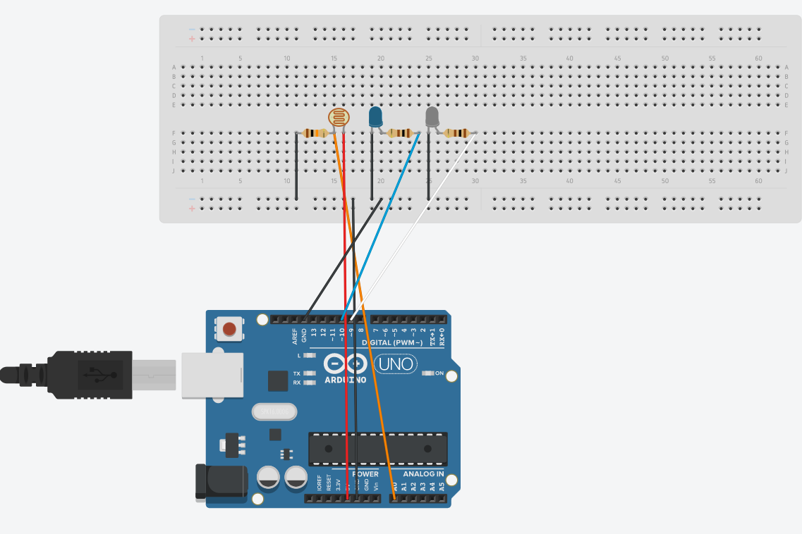
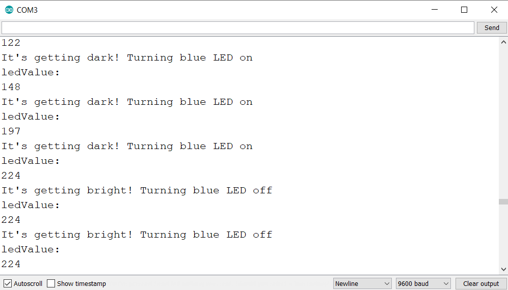
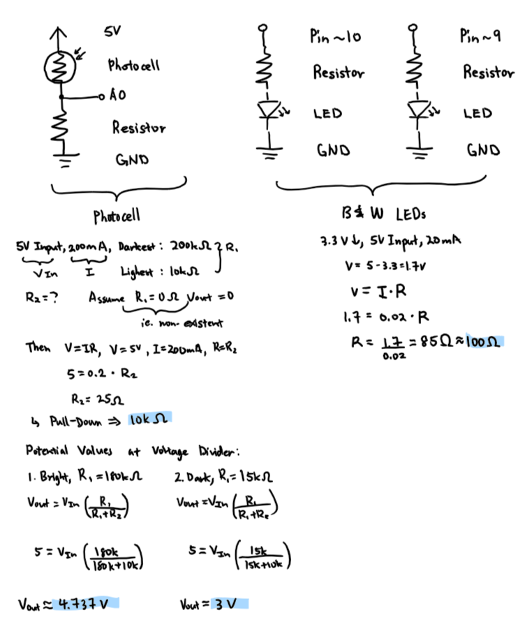

Amanda's Assignment 3!
Here is all the documentation for assignment 3!

This is the Arduino circuit consisting of a white and blue
LED and a photocell sensor.

This is the circuit in action. It conceptually depicts day
and night. The white LED represents brightness. As the
night falls, the blue LED lights up and gradually dims as
the night deepens. The photocell component tracks the
brightness level. Sample outputs from the operation are
shown below.



These are the schematic and resistance calculations. 100 ohms
resistors were chosen since they were the closest to the 85
ohms resistances for the blue and white LEDs. For the photocell
sensor, any resistor above 250 ohms could have been used and a 10K
ohms resistor was chosen to act as a pull-down resistor. Sample
calculations at the voltage dividers are demonstrated below the
resistor calculations. If I shine a light source directly on the
sensor, the resistance of the photocell could be around 15k ohms;
if my lights are off and it is dark outside, the resistance of the
photocell sensor could be around 180k ohms.
// analog pin for blue LED
const int BLUE = 10;
// analog pin for white LED
const int WHITE = 9;
// pin for photocell sensor
const int PHOTOCELL = A0;
// function called when file starts
void setup(void) {
// initiates Serial monitor at 9600 baud
Serial.begin(9600);
// initiates white LED pin as output
pinMode(WHITE, OUTPUT);
// initiates blue LED pin as output
pinMode(BLUE, OUTPUT);
// initiates photocell pin (A0) as input
pinMode(PHOTOCELL, INPUT);
}
// function executed after setup; repeatedly
void loop(void) {
// sets sensorValue as value from photocell pin
int sensorValue = analogRead(PHOTOCELL);
// converts sensorValue (0 to 1023)
// into ledValue (0 to 255)
// dark to bright
int ledValue = map(sensorValue, 0, 1023, 0, 255);
// prints phrase as a line in serial monitor
Serial.println("ledValue: ");
// prints integer as a line in serial monitor
Serial.println(ledValue);
// changes white LED duty cycle to given value
analogWrite(WHITE, ledValue);
// executes if ledValue (duty cycle) is larger or equal to 200
// ie. bright
if (ledValue >= 200) {
// prints phrase as a line in serial monitor
Serial.println("It's getting bright! Turning blue LED off");
// turns blue LED off
analogWrite(BLUE, 0);
// executed if ledValue (duty cycle) is less than 200
// ie. not bright
} else {
// prints phrase as a line in serial monitor
Serial.println("It's getting dark! Turning blue LED on");
// turns blue LED on
analogWrite(BLUE, ledValue);
}
// delays for 100 miliseconds
delay(100);
}
This is the code snippet